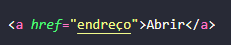
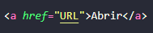
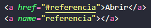
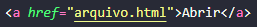
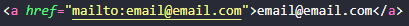

São uma referência dentro de um arquivo em hipertexto para outras partes do mesmo documento, outros documentos, arquivos ou endereço eletrônico. Onde os links podem ser remotos, internos, locais, com endereço de correio ou arquivos.
As tags de hyperlinks são usadas para associar caminhos alternativos para outros locais.
Sintexe:
<a href="endereço">Conteúdo Referenciado Clicável</a>
Sintexe na programação do site:
Para usarmos esse tipo de hyperlink precisamos de links dos sites e páginas web referenciadas, onde usaremos para colocá-las será através da URL.
Sintexe:
<a href="URL">Conteúdo Referenciado</a>
Sintexe na programação do site:
São usados para levar de uma ponta do site para a outra ponta que está descrita no mesma página web, onde é usada para documentos extensos.
Sintexe:
<a href="#referencia">Conteúdo Referenciado</a>
<a name="referencia"></a>
Sintexe na programação do site:
São links que apontam para outras páginas dentro do mesmo site.
Sintexe:
<a href="arquivo.html">Conteúdo Referenciado</a>
Sintexe na programação do site:
É possível criar links para serem utilizados através de imagens.
Sintexe:
<a href="referencia"> <img src="imagem.jpg"> </a>
Sintexe na programação do site:
São links onde apontam para arquivos e possibilitam realizar um download do arquivo.
Sintexe:
<a href="arquivo.extensao" download="arquivo.extensao" type="tipo">Conteúdo</a>
Sintexe na programação do site:
São links que direcionam para um endereço eletrônico.
Sintexe:
<a href="mailto:email@email.com">email@email.com</a>
Sintexe na programação do site:
